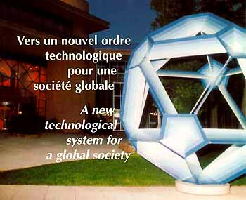

"A new technological system for a global society"
"Vers un nouvel ordre technologique pour une société
globale"

On the Invitiation of
the Conférence des
Grandes Ecoles
the Conference of European
Schools for Advanced Engineering Education and Research
the University of California,
Berkeley
the Massachusetts Institute of
Technology
Sous le haut patronage
de Monsieur Jacques Chirac
Président de la République Francaise
et de Monsieur Jacques Santer
Président de la Commission Européenne
Sponsored by
la Commission Européenne
le Ministère des
Affaires Etrangères
le Ministère de
l'Industrie
le Ministère de l'Education
national, de
l'Enseignement Supérieur, de la Recherche et de l'Insertion
Professionelle
In coooperation with
le Conseil Régional
Provence-Alpes Côte d'Azur
le Conseil Général Nice-Côte d'Azur
Côte d'Azur Developpement
France
Télécom
Pour avoir des informations sur le Symposium -- en Français ou
en Anglais --, envoyez un courrier électronique à / For
inquiries about the Symposium -- in English or French -- send email
to: Jack Kessler at kessler@well.sf.ca.us or Jean -
Pierre Tubach at tubach@ds.enst.fr
or M. Bernard Sutter at sutter@paris.ensmp.fr.

 |
Symposium Web site sponsored by the Berkeley Digital Library SunSITE Web management by Roy Tennant at manager@sunsite.berkeley.edu Maintained at http://sunsite.berkeley.edu/IS3/ |